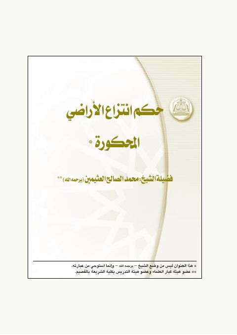

حكم انتزاع الأراضي المحكورة
Authors: محمد بن صالح العثيمين
Download Downloads need an internet connection.
- Volumes
- 1
- Pages
- 4
- Type
- بحث
- Category
- المكتبة القانونية
- Subcategory
- إداري
Description
**▫️ العنوان: حكم انتزاع الأراضي المحكورة** ▪️ المؤلف: #محمد_صالح_العثيمين ▫️ عدد الأجزاء: 1 ▪️ الصفحات: 4 ▫️ نوع الوعاء: #بحث ▪️ التصنيف الرئيسي: #المكتبة_القانونية ▫️ التصنيف الفرعي: #إداري ۪